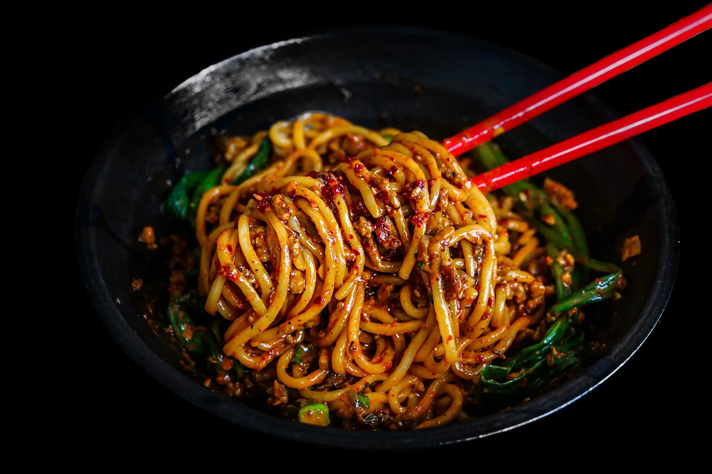

Dan Dan Noodles

Dan Dan Noodle Recipe
In all of the different variations of Dan Dan Noodles
out there, I've found that there's hardly much consistency in flavor, texture,
or even ingredients beyond the numbing sichuan peppercorn flavor. The diverse execution of
this dish has been adapted many times over
throughout many regions of China and beyond it's borders. My main
issue with many versions of this dish is a lack of
flavor complexity. But my iteration, after much recipe testing,
with its balance of spice, nuttiness, and sweetness not only is the tastiest
so far, but also a homage to the Taiwanese style of this dish- flavored with more sesame flavor.
Ingredients
- 10 oz shanghai style wheat noodles
- 1/2 lb minced pork rib
- 4 cloves garlic
- 1 tbsp shaoxing wine
- 2 green onions
- 2 tbsp sichuan chili oil
- 1 tbsp sesame paste
- 1 tbsp peanut butter
- 1 tbsp soy sauce
- 1 tbsp dark soy sauce
- 1 tbsp rice vinegar
- 1/4 cup chicken broth
- salt and pepper
Steps
- Cook minced pork with salt and pepper for a few minutes until no longer pink.
Add salt, pepper, soy sauce, wine. Mix until even. Thenn add minced garlic and green onion, and cook until pork is brown.
- Cook noodles to desired firmness, drain and top with pork.
- Combine tahini, peanut butter, soy sauce, dark soy sauce, rice vinegar, chili oil, and sugar and mix.
- Pour sauce mixture over noodles and add chicken broth to mix.
- Garnish with green onions.